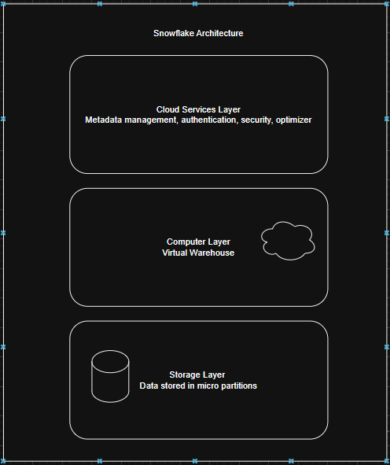

Date: 2025-12-02
Snowflake is a cloud based Data Warehouse that is able to store large amounts of data useful for analytics, reporting and sometimes Machine Learning
Pros
Snowflake comes in different editions, with varying features and pricing. Choose the one based on your use case
Snowflake consists of 3 layers:
Snowflake charges as per the compute power used and the amount of data stored
placeholder for image
Snowflake allows you to create different roles where you can manage access to different Databases, Schemas, Tables, Views
There are 4 common roles available in Snowflake
The original role who created the particular object can grant access to other roles to access/edit the object
To access any object in Snowflake you need to know two details. One is Database name and the other is Schema name
There can be multiple schemas present in one Database
For example, consider a table name 'employee_details' present in database - 'employee_db' and schema - 'employee-schema'. you can select the table using the query -
SELECT * FROM employee_db.employee_schema.employee_details;
There will be a table named INFORMATION SCHEMA, which consists of all the tables and schema list of that particular database.
Snowflake supports 4 types of tables:
syntax for creating different types of tables:
-- Creating a Permanent Table
CREATE TABLE employee_details (
id INT,
name STRING,
department STRING
);
-- Creating a Temporary Table
CREATE TEMPORARY TABLE temp_employee_details (
id INT,
name STRING,
department STRING
);
-- Creating a Transient Table
CREATE TRANSIENT TABLE transient_employee_details (
id INT,
name STRING,
department STRING
);
-- Creating an External Table
CREATE EXTERNAL TABLE external_employee_details (
id INT,
name STRING,
department STRING
)
LOCATION='s3://your-bucket/employee_data/'
FILE_FORMAT = (TYPE = 'CSV' FIELD_DELIMITER = ',' SKIP_HEADER = 1);
Time travel will be available for Permanent (90 days) and Transient (1 day), Temporary (1 day) tables, but not for External tables.
Views are virtual tables that are based on the result set of a SQL query
Views do not store data themselves, but they are executed and displayed when accessed
Snowflake supports 3 types of views
syntax for creating different types of views:
-- Creating a Standard View
CREATE VIEW employee_view AS
SELECT id, name, department
FROM employee_details
WHERE department = 'Sales';
-- Creating a Materialized View
CREATE MATERIALIZED VIEW sales_employee_view AS
SELECT id, name, department
FROM employee_details
WHERE department = 'Sales';
-- Creating a Secure View
CREATE SECURE VIEW secure_employee_view AS
SELECT id, name, department
FROM employee_details
WHERE department = 'HR';
Stages are used to named storage locations where you can store files in Snowflake
They can be used to stage data for loading into tables or to store data that is not part of the database schema
Snowflake supports 3 types of stages:
Named Stages are again categorized into 2 types
syntax for creating stages:
--Accessing Table Stage
list @%employee_details; -- table name is employee_details
--Accessing User Stage
list @~;
-- Creating an Internal Named Stage
CREATE STAGE my_internal_stage;
-- Creating an External Named Stage (AWS S3 example)
CREATE STAGE my_external_stage
URL='s3://my-bucket/data/'
CREDENTIALS=(AWS_KEY_ID='your_aws_key_id' AWS_SECRET_KEY='your_aws_secret_key');
← Back to Home
← Back to Blogs